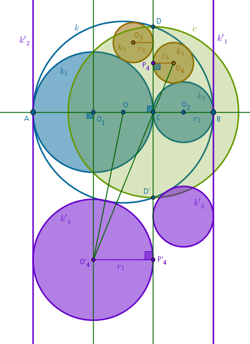
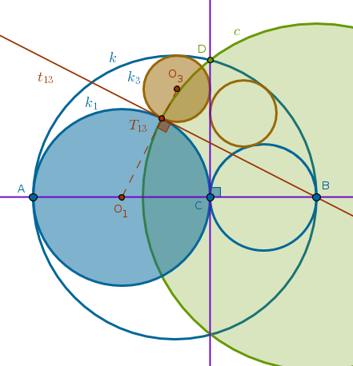

Problem 9
Among the three given distinct collinear points \(A\), \(B\) and \(C\),
the point \(C\) is located between the points \(A\) and \(B\). Using the
line segments \(AB\), \(CA\) and \(CB\) as diameters three circles, \(k\),
\(k_1\) and \(k_2\), are constructed. \(Line(C, D)\) is perpendicular to
\(Line(A, B)\). Each of the circles \(k_3\) and \(k_4\) touch \(k\) and
\(Line(C, D)\) with \(k_3\) also touching \(k_1\) and \(k_4\) also
touching \(k_2\).
Prove that:
9.1) the circles \(k_3\) and \(k_4\) are equal.
9.2) the tangent \(t_{13}\) common to \(k_1\) and \(k_3\) at \(T_{13}\)
passes through \(B\) and the tangent \(t_{24}\) common to \(k_2\) and \(k_4\)
at \(T_{24}\) passes through \(A\):
9.1) If we choose \(C\) to be the center of inversion with negative! power then we can require \(A\) and \(B\) to be the images of each other under that inversion. Since \(Line(C, D)\) is a given perpendicular to \(Line(A, B)\), finding the radius of this inversion is trivial. Since:
$$r \equiv CD$$then:
$$c \equiv Circle(C, CD)$$Under the inversion with respect to \(c\) with negative! power:
- \(Line(A, B)\) and \(Line(C, D)\) invert into themselves
- \(k\) also inverts into itself as it passes through \(D\) and \(D'\), which are diametrically opposite to each other on \(c\) (ICP41)
- \(k_1\) inverts into a straight line \(k'_1\) perpendicular to \(Line(A, B)\) and touching \(k\) at \(B\) (preservation of tangency points)
- \(k_2\) inverts into a straight line \(k'_2\) perpendicular to \(Line(A, B)\) and touching \(k\) at \(A\) (preservation of tangency points)
- \(k_3\) inverts into a circle \(k'_3\) touching \(Line(C, D)\), \(k\) and \(k'_1\) (preservation of tangency points)
- \(k_4\) inverts into a circle \(k'_4\) touching \(Line(C, D)\), \(k\) and \(k'_2\) (preservation of tangency points):
Let:
$$O_1A = O_1C = r_1$$ $$O_2C = O_2B = r_2$$ $$OA = OB =$$ $$\frac {2r_1 + 2r_2}{2} =$$ $$r_1 + r_2 = r$$Let us express the radii of \(k_3\), \(r_3\), and \(k_4\), \(r_4\), via \(r_1\) and \(r_2\) and prove that \(r_3 \equiv r_4\).
Consider the circles \(k_4\) and \(k'_4\). \(Line(C, D)\) is their common tangent. Points \(O_4\), \(C\) and \(O'_4\) are collinear. We can easily prove that the right triangles \(CP_4O_4\) and \(CP'_4O'_4\) are similar by AAA since their angles at the common vertex \(C\) are vertical, and hence:
$$\frac {r_4}{CP_4} = \frac {r_1}{CP'_4}$$ $$\begin{equation} r_4 = r_1 \frac {CP_4}{CP'_4} \end{equation}$$Since \(P_4\) and \(P'_4\) are inverses of each other with respect to \(c\) with negative! power:
$$CP_4 \times CP'_4 = CD^2$$ $$CP_4 = \frac {CD^2}{CP'_4}$$Putting \(CP_4\) back into (1) we obtain:
$$\begin{equation} r_4 = r_1 \frac {CD^2}{CP'^2_4} \end{equation}$$Since \(A\) and \(B\) are inverses of each other with respect to \(c\) with negative! power:
$$CA \times CB = CD^2 = 4r_1r_2$$and (2) becomes:
$$\begin{equation} r_4 = \frac {4r^2_1r_2}{CP'^2_4} \end{equation}$$To find \(CP'^2_4\) we use Pythagoras and the right triangle \(OO_1O'_4\):
$$CP'^2_4 = O_1O'^2_4 =$$ $$OO'^2_4 - OO^2_1 =$$ $$(2r_1 + r_2)^2 - (r_1 + r_2 - r_1)^2 =$$ $$4r_1(r_1 + r_2)$$Putting \(CP'^2_4\) back into (3) we obtain for \(r_4\):
$$r_4 = \frac {4r^2_1r_2}{4r_1(r_1 + r_2)} =$$ $$\frac {r_1r_2}{r_1 + r_2}$$In a similar way we can show that:
$$r_3 = \frac {r_1r_2}{r_1 + r_2}$$and hence:
$$r_3 \equiv r_4$$9.2) This time we choose \(B\) as a center of inversion with positive! power and require that \(C\) and \(A\) must be the images of each other under that inversion. We can use ICE1 or ICE3 to find the radius of inversion \(r\). Since \(Line(C, D)\) is a perpendicular to \(Line( A, B)\) through \(C\), it follows that:
$$c \equiv Circle(B, BD)$$Under that inversion:
- \(Line(A, B)\) inverts into itself
- \(Line(C, D)\) inverts into \(k\)
- \(k\) inverts into \(Line(C, D)\)
- \(k_1\) passes through \(A\) and \(C\), hence it is orthogonal to \(c\) and it inverts into itself (ICP38)
- \(k_3\) touches \(k\), \(k_1\) and \(Line(C, D)\) all of which invert into their original configuration. And since inversion preserves tangency points, \(k_3\) must invert into itself and it also must be orthogonal to \(c\):
It follows then that \(T_{13}\) - the (single) point of tangency of \(k_1\) and \(k_3\) - will also invert into itself. It will remain where it is, fixed, and hence it must be on \(c\) (inversion with positive! power).
But \(c\) cuts the \(AT_{13}C\) semi-circle portion of \(k_1\) in only one (fixed) point. So in fact \(T_{13}\) belongs to three circles at once, \(c\), \(k_1\), \(k_3\), two of which, \(k_1\) and \(k_3\), touch and are orthogonal to the third one, \(c\). From the definition of orthogonal circles it follows then that the tangent \(t_{13}\) common to \(k_1\) and \(k_3\) at \(T_{13}\) must pass through \(B\).
The case of \(t_{24}\) is proved in the similar way - choose \(A\) as a center of inversion with positive! power, make \(C\) and \(B\) inverses of each other under that inversion and so on.
\(\blacksquare\)